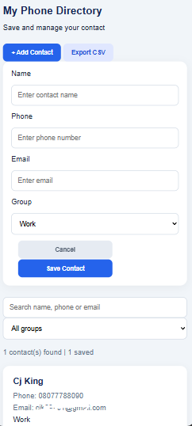
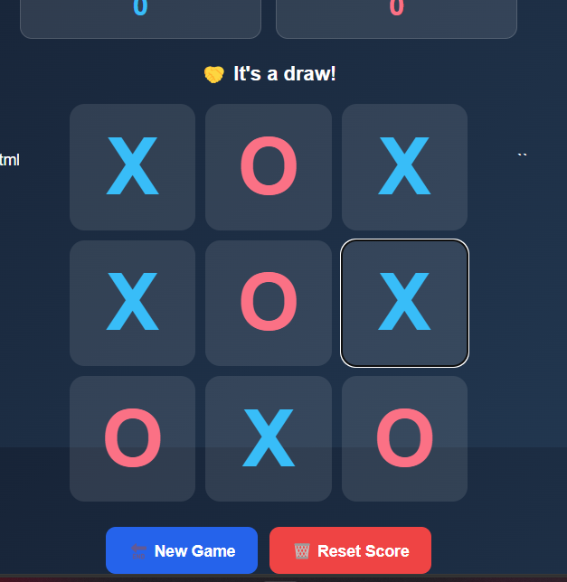
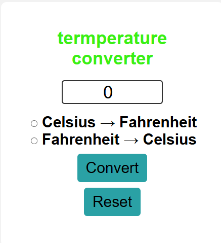
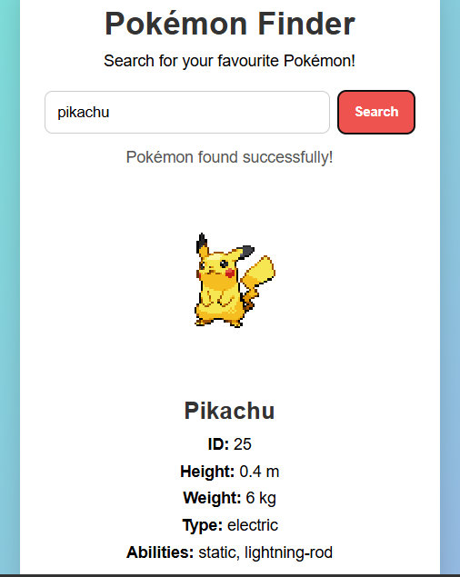
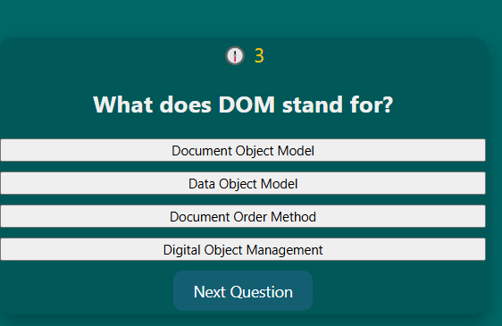
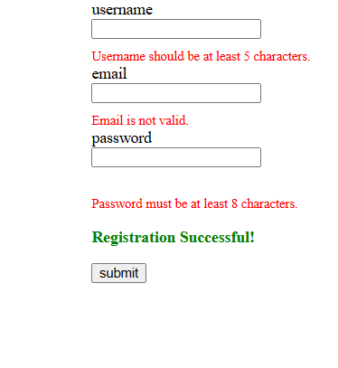

Hi, It's cjk
I'm a
I bulid mordern responsive websites and web applications usimg HTML, CSS, JAVASCRIPT, PHP AND MORE

I bulid mordern responsive websites and web applications usimg HTML, CSS, JAVASCRIPT, PHP AND MORE

I am a Full Stack Web Developer with one year of experience building responsive websites and web applications. I enjoy creating beautiful user interfaces and solving real-world problems through code.
Read MoreI am passionate aboutn UI/UX Design, Creating beautiful, mordern, and user-friendly interfaces. My focus is on understanding user's needs and designing digital experiences that are visually apealing, easy to navigate, and enjoyable to use.
I am developing my skills in Frontend Developement, using HTML, CSS, and JAVAScrIPT to build responsive, interractive, and functional Websites. My goal is to transform creative designs into real-world Wsbsites that work smoothly across mobile phones, tablets and computers.
I am building my skills in Backend Developement, focusing on creating the systems that power Websites and applictions behind the secenes. I am learning learning how to develop secure servers, manages databases, build APIs, handle user authentication, and process data efficiently. My goal is to develop reliable, scalable, and secure applictions by connecting Frontend interfaces with powerful Backend systems

My Phone Directory Project My Phone Directory is a contact management application designed to help users save, organize, search, and manage their contacts easily. The application allows users to add new contacts by entering their names, phone numbers, email addresses, and contact groups. It also provides a search feature for quickly finding saved contacts and an export option for managing contact information. My goal is to create a simple, user-friendly, and responsive application that makes contact management faster, easier, and more efficient.

Tic-Tac-Toe Game Project My Tic-Tac-Toe Game is an interactive web-based game designed to provide users with an enjoyable gaming experience. It allows two players to compete by taking turns placing X and O symbols on a 3×3 game board. The application automatically detects winning combinations, identifies draws, and displays the game results. It also includes a New Game button to start another match and a Reset Score button to clear the scores. My goal is to improve my JavaScript programming skills by building interactive, responsive, and user-friendly web applications.

Temperature Converter Project My Temperature Converter is a simple and interactive web application designed to convert temperatures between Celsius and Fahrenheit. It allows users to enter a temperature value, select the desired conversion direction, and calculate the result instantly. The application also includes a Reset button to clear the input and start a new conversion. I developed this project to strengthen my JavaScript programming skills, particularly in handling user input, performing mathematical calculations, and creating interactive web applications. My goal is to build practical, responsive, and user-friendly tools that solve everyday problems.

Pokémon Finder Project My Pokémon Finder is an interactive web application that allows users to search for their favourite Pokémon and view detailed information about them. By entering a Pokémon's name, users can retrieve its image, identification number, height, weight, type, and abilities. The application uses an external API to fetch real-time Pokémon data and display the results dynamically. I developed this project to improve my JavaScript skills, especially API integration, asynchronous programming, data fetching, and DOM manipulation. My goal is to create interactive applications that connect users with useful information in a simple and engaging way.

This project showcases an interactive quiz interface for testing web development knowledge. It presents a multiple-choice question about the DOM, with clear answer options and a “Next Question” button to guide users through the quiz. The teal color scheme and simple layout keep the screen focused and easy to navigate.

This project showcases a registration form with validation for username length, email format, and password length. Clear messages beneath the fields help users identify what needs attention, while a submission button and success message demonstrate how the form communicates its status.